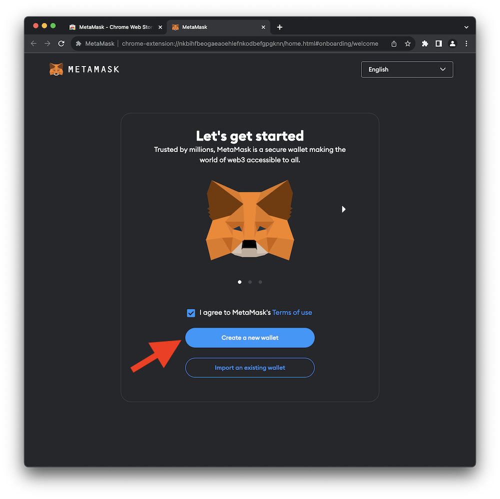
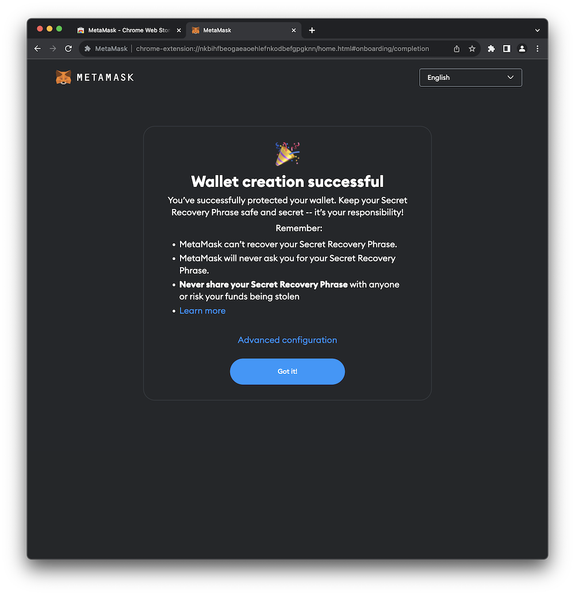
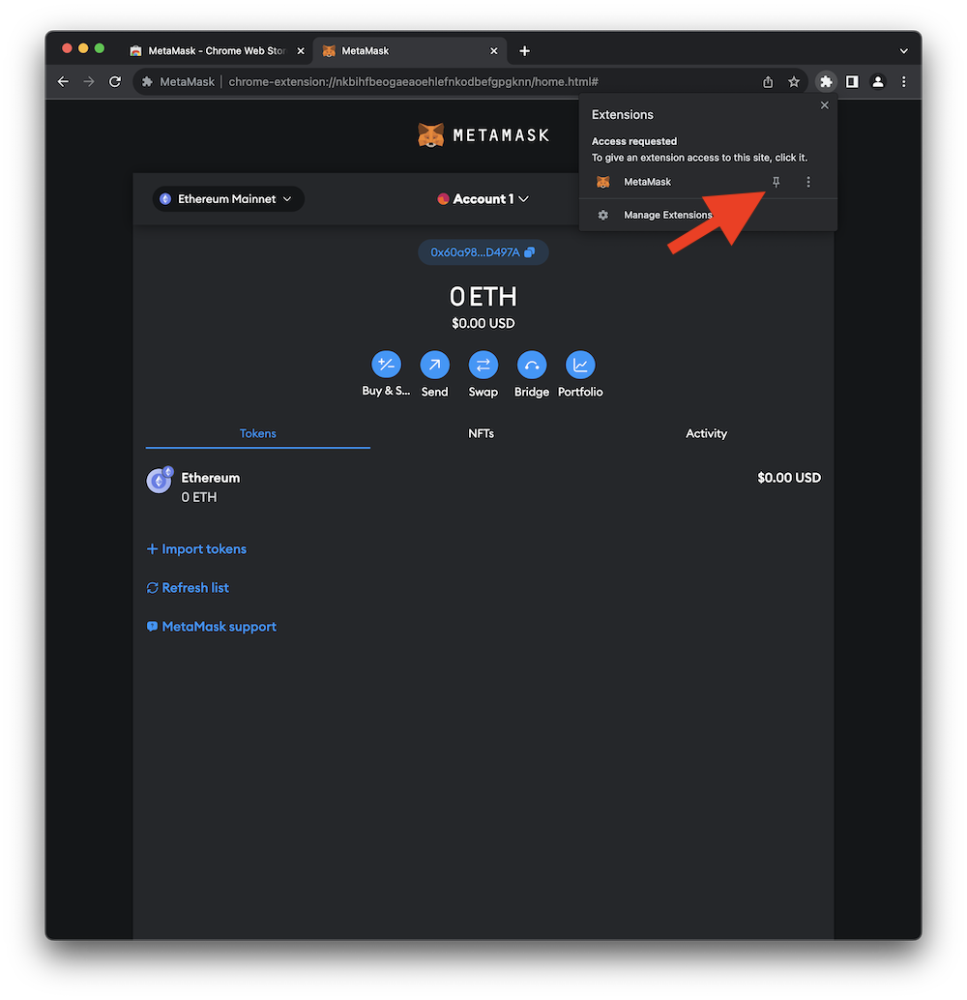

MetaMask Installation
MetaMask is a software crypto wallet that can be used to interact with a wide variety of crypto blockchains. MetaMask is distributed as a standalone app for both iOS and Android. Additionally, it can be installed as a browser extension in most commonly used web browsers, including Chrome, Firefox, Brave, Edge, and Opera. Continue below to install and configure MetaMask for this guide.
Info
The term wallet is an unfortunate bit of nomenclature in the crypto space and often misleads newcomers. Unlike a physical wallet that may hold cash and credit cards, a crypto wallet doesn't actually store any digital assets. Instead, a crypto wallet stores the public and private cryptographic keys required to digitally sign crypto transactions. All digital assets exist on the blockchain. When interacting with a blockchain, transactions can be signed using the crypto wallet containing your private key.
Warning
Keep your private keys PRIVATE and SAFE. As long as you have your private keys, you can always access your assets on the blockchain. Of course, if someone else has your private keys, they can also access your assets.
Warning
MetaMask is a convenient crypto wallet for testing and debugging smart contracts and even for storing small amounts of digital assets. However, it's a software program running on an online device. That makes it potentially vulnerable to a wide variety of attacks. When deploying production smart contracts or interacting with crypto accounts that have real value, it is HIGHLY recommended that you utilize an offline hardware wallet.
Install Browser Extension
- Select your web browser below and install the MetaMask extension.

Chrome 
Firefox 
Brave 
Edge 
Opera
For example, in Chrome click Add to Chrome as shown in the image below.
- When the installation starts, you'll need to agree to the Terms of Use and then click Create a new wallet.
 - Since the MetaMask software wallet is used to sign crypto transactions it's very important to secure the account with a strong password.

- Typically, this would be a great time to save the Secret Recovery Phrase somewhere secret, somewhere safe. Your Secret Recovery Phrase is used to generate your private key and can be used to recover an account if you computer explodes or sinks to the bottom of a lake. However, since the account you just created is merely for this guide and won't ever store any real assets you can skip this step.

- At this point your wallet should be successfully created.
 - In the future, you can access the MetaMask wallet from the extensions menu of your web browser as shown in the image below.

- Some web browsers, like Chrome, will allow you to pin the extension to the toolbar making it easier to find in the future.
